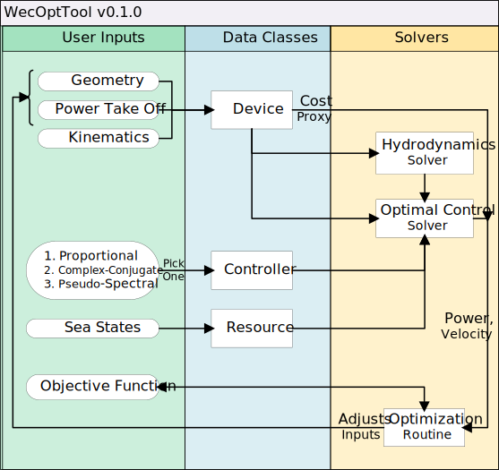

2. Optimizing an Existing WEC Model¶
2.1. Overview¶
This section explains and expands upon the optimization.m example file
provided in the examples/RM3 directory of the WecOptTool source code. This
example considers the DOE Reference Model 3 (RM3) device.
See the entire example file
1 2 3 4 5 6 7 8 9 10 11 12 13 14 15 16 17 18 19 20 21 22 23 24 25 26 27 28 29 30 31 32 33 34 35 36 37 38 39 40 41 42 43 44 45 46 47 48 49 50 51 52 53 54 55 56 57 58 59 60 61 62 63 64 65 66 67 68 69 70 71 72 73 74 75 76 77 78 79 80 81 82 83 84 85 86 87 88 89 90 91 92 93 94 95 96 97 98 99 100 101 102 103 104 105 106 107 108 109 110 111 112 113 114 | %% optimization.m
% Example of an optimization study
%% Define and store sea state of interest
% Create Bretschnider spectrum from WAFO and trim off frequencies that
% have less that 1% of the max spectral density
% S = bretschneider([],[8,10],0);
% SS = WecOptTool.SeaState(S, "trimFrequencies", 0.01)
% Load an example with multiple sea-states (8 differing spectra) and trim
% off frequencies that have less that 1% of the max spectral density
SS = WecOptTool.SeaState.example8Spectra("trimFrequencies", 0.01);
%% Create a folder for storing intermediate files
folder = WecOptTool.AutoFolder();
%% Optimization Setup
% Add geometry design variables (parametric)
x0 = [5, 7.5, 1.125, 42];
lb = [4.5, 7, 1.00, 41];
ub = [5.5, 8, 1.25, 43];
% Define optimisation options
opts = optimoptions('fmincon');
opts.FiniteDifferenceType = 'central';
opts.UseParallel = true;
opts.MaxFunctionEvaluations = 5; % set artificial low for fast running
opts.Display = 'iter';
% Enable dynamic plotting
% opts.PlotFcn = {@optimplotx,@optimplotfval};
% Define unused parameters
A = [];
B = [];
Aeq = [];
Beq = [];
NONLCON = [];
%% Optimization Execution
% Create simple objective function handle
objFun = @(x) myWaveBotObjFun(x, SS, folder);
% Call the solver
[x, fval] = fmincon(objFun, x0, A, B, Aeq, Beq, lb, ub, NONLCON, opts);
%% Recover device object of best simulation and plot its power per freq
%% and mesh
performances = folder.recoverVar("performances");
for i = 1:length(performances)
test = performances{i};
if isequal(test(1).x, x)
bestPerformances = test;
break
end
end
WecOptTool.plot.powerPerFreq(bestPerformances);
WecOptTool.plot.plotMesh(bestPerformances(1).meshes);
%% Define objective function
% This can take any form that complies with the requirements of the MATLAB
% optimization functions
function fval = myWaveBotObjFun(x, seastate, folder)
w = seastate.getRegularFrequencies(0.5);
geomParams = [folder.path num2cell(x) w];
[deviceHydro, meshes] = designDevice('parametric', geomParams{:});
for j = 1:length(seastate)
performances(j) = simulateDevice(deviceHydro, ...
seastate(j), ...
'CC');
end
fval = -1 * weightedPower(seastate, performances);
[performances(:).w] = seastate.w;
performances(1).x = x;
performances(1).meshes = meshes;
folder.stashVar(performances);
end
function out = weightedPower(seastate, performances)
pow = sum([performances.powPerFreq]);
out = dot(pow, [seastate.mu]) / sum([seastate.mu]);
end
% Copyright 2020 National Technology & Engineering Solutions of Sandia,
% LLC (NTESS). Under the terms of Contract DE-NA0003525 with NTESS, the
% U.S. Government retains certain rights in this software.
%
% This file is part of WecOptTool.
%
% WecOptTool is free software: you can redistribute it and/or modify
% it under the terms of the GNU General Public License as published by
% the Free Software Foundation, either version 3 of the License, or
% (at your option) any later version.
%
% WecOptTool is distributed in the hope that it will be useful,
% but WITHOUT ANY WARRANTY; without even the implied warranty of
% MERCHANTABILITY or FITNESS FOR A PARTICULAR PURPOSE. See the
% GNU General Public License for more details.
%
% You should have received a copy of the GNU General Public License
% along with WecOptTool. If not, see <https://www.gnu.org/licenses/>.
|
The general concept of WecOptTool is illustrated in the diagram below organized into three columns.
- User Inputs (Green) - aspects of the tool that the user can interact with
- Data Classes (Blue) - objects used to store and transfer information within a study
- Solvers (Yellow) - physics models and optimization algorithms that process data
To run WecOptTool the user will need to define each of the six input blocks in the User Inputs column. For the RM3, the Geometry will be defined by a mesh and design variables (\(r_1, r_2, d_1, d_2\)), which refer to the spar/float radius and distance between the surface water level and the distance between the two bodies. In the Power Take Off (PTO) input, the user will define constraints on the PTO such as max force, \(F_{max}\), and max stroke \(\Delta x_{max}\) and an operational constraint, \(H_{s,max}\).). Lastly, the kinematics will define how the two bodies of the RM3 move relative to the resource and relative degrees of freedom.
Next, the user will choose one of three controllers to compute the resulting
dynamics(ProportionalDamping, ComplexConjugate, PseudoSpectral).
The Sea States input block for the RM3 may made up of a single spectrum or
multiple spectra. Finally, the user will need to determine some objective
function of interest for the device being studied.
WecOptTool will use the User Inputs to build a set of Data Classes and pass the information to the Solvers. The Hydrodynamics Solver currently uses Nemoh to compute the linear wave-body interaction properties using the boundary element method (BEM). The Optimal Control Solver will take the Data Classes to return device results for the given controller and sea state. This output, paired with some cost proxy from the device, can be used to evaluate the objective function inside the Optimization Routine.
In WecOptTool, this process is executed by applying the following steps:
- Select a device design and calculate its hydrodynamic parameters
- Examine the performance of the device design using the chosen control options, for a given sea state
The remainder of this page will illustrate (using the optimization.m
example) how this process is applied to a co-optimization problem.
2.2. Define a sea state¶
WecOptTool can simulate single or multiple spectra sea states, where weightings
can be provided to indicate the relative likelihood of each spectra. The
following lines from optimization.m provide means of using the WAFO MATLAB
toolbox or a predefined spectra from WecOptTool.
6 7 8 9 10 11 12 13 | % Create Bretschnider spectrum from WAFO and trim off frequencies that
% have less that 1% of the max spectral density
% S = bretschneider([],[8,10],0);
% SS = WecOptTool.SeaState(S, "trimFrequencies", 0.01)
% Load an example with multiple sea-states (8 differing spectra) and trim
% off frequencies that have less that 1% of the max spectral density
SS = WecOptTool.SeaState.example8Spectra("trimFrequencies", 0.01);
|
Spectra are formatted following the convention of the WAFO MATLAB toolbox, but
can be generated via any means (e.g., from buoy measurements) as long as the
structure includes the S.S and S.w fields.
S =
struct with fields:
S: [257×1 double]
w: [257×1 double]
tr: []
h: Inf
type: 'freq'
phi: 0
norm: 0
note: 'Bretschneider, Hm0 = 4, Tp = 5'
date: '25-Mar-2020 13:08:28'
In the active code above from optimization.m, there are eight spectra loaded into a struct array.
These can be plotted using standard MATLAB commands.
figure
hold on
grid on
arrayfun(@(x) plot(x.w,x.S,'DisplayName',x.note), S)
legend()
xlim([0,3])
xlabel('Freq. [rad/s]')
ylabel('Spect. density [m^2 rad/s]')
The predefined spectra are returned as SeaState
objects. The SeaState class allows the user to
manipulate the given spectra to the requirements of the experiment.
Automatically, the weighting parameter mu will be set to unity when
multiple sea states are given with mu undefined. In this example,
frequencies that have less than 1% of the maximum spectral density are also
removed, (using the "trimFrequencies" option) to increase the speed of
computation with minimal loss of accuracy. See the
SeaState documentation for all available options.
2.3. Create file storage¶
A number of processes used by WecOptTool require temporary storage for
intermediate files. Additionally, as part of the optimization process, it can
be useful to store data in temporary files for recovery later (as MATLAB
optimizers do not keep intermediate values). WecOptTool provides the
AutoFolder class for just this purpose, which
provides a temporary storage space. Also, the user does not need to worry about
deleting the files contained in the folder when finished, as these are removed
automatically when the AutoFolder object is deleted.
The folder is created as follows:
15 16 | %% Create a folder for storing intermediate files
folder = WecOptTool.AutoFolder();
|
2.4. Create an objective function¶
Next, we create the objective function we wish to minimize. Note, functions must be defined at the bottom of the script, although we will use them above. The complete code is as follows:
65 66 67 68 69 70 71 72 73 74 75 76 77 78 79 80 81 82 83 84 85 86 87 88 89 90 91 92 93 94 95 | %% Define objective function
% This can take any form that complies with the requirements of the MATLAB
% optimization functions
function fval = myWaveBotObjFun(x, seastate, folder)
w = seastate.getRegularFrequencies(0.5);
geomParams = [folder.path num2cell(x) w];
[deviceHydro, meshes] = designDevice('parametric', geomParams{:});
for j = 1:length(seastate)
performances(j) = simulateDevice(deviceHydro, ...
seastate(j), ...
'CC');
end
fval = -1 * weightedPower(seastate, performances);
[performances(:).w] = seastate.w;
performances(1).x = x;
performances(1).meshes = meshes;
folder.stashVar(performances);
end
function out = weightedPower(seastate, performances)
pow = sum([performances.powPerFreq]);
out = dot(pow, [seastate.mu]) / sum([seastate.mu]);
end
|
The following subsections will describe each stage of setting up the objective function.
2.4.1. Define the inputs¶
The input definition of an objective function used in WecOptTool is typically going to take the form:
function result = myObjFun(x, seastate, folder)
where x is the solution to be tested, seastate is a
SeaState object and folder is an
AutoFolder object. Although in most cases only x
will vary, the other inputs will be required within the optimization function
and can’t be accessed through the global workspace.
2.4.2. Define design variables¶
As shown in the diagram below, for RM3 study considered in optimization.m the design variables are the radius of the surface float, r1, the radius of
the heave plate, r2, the draft of the surface float, d1, and the depth of the heave plate, d2, such that x = [r1, r2, d1, d2].
The optimization algorithm will attempt to find the values of x that minimize the objective function.

For the RM3 example, the hydrodynamic assessment of a device design is
calculated by the designDevice function. The 'parametric' option to
designDevice requires 6 arguments, a folder to store intermediate files,
the geometry design variables, r1, r2, d1, d2, and a representative set of
angular frequencies to be calculated by NEMOH. The folder is provided by the
path attribute of the AutoFolder object. The
design variables will be passed by the optimization routine, while the
frequencies can be extracted from the given SeaState
object using its getRegularFrequencies()
method, which provides regularly spaced frequencies covering all spectra in the
object array. These inputs are combined and then added as arguments to the
designDevice function, after the design option name.
71 72 73 74 | w = seastate.getRegularFrequencies(0.5);
geomParams = [folder.path num2cell(x) w];
[deviceHydro, meshes] = designDevice('parametric', geomParams{:});
|
2.4.3. Calculate controlled device performance¶
In the RM3 example, three types of controllers are defined:
Proportional Damping (
'P'): Resistive damping (i.e., a proportional feedback on velocity) (see, e.g., [Falnes2002]). Here, the power take-off (PTO) force is set as\[F_u(\omega) = -B_{PTO}(\omega)u(\omega)\]where \(B_{PTO}\) is a constant chosen to maximize absorbed power and \(u(\omega)\) is the velocity.
Complex Conjugate (
'CC'): Optimal power absorption through impedance matching (see, e.g., [Falnes2002]). The intrinsic impedance is given by\[Z_i(\omega) = B(\omega) + i \left( \omega{}(m + A(\omega)) - \frac{K_{HS}}{\omega}\right) ,\]where \(\omega\) is the radial frequency, \(B(\omega)\) is the radiation damping, \(m\) is the rigid body mass, \(A(\omega)\) is the added mass, and \(K_{HS}\) is the hydrostatic stiffness. Optimal power transfer occurs when the PTO force, \(F_u\) is set such that
\[F_u(\omega) = -Z_i^*(\omega)u(\omega) ,\]where \(u(\omega)\) is the velocity.
Pseudo Spectral (
'PS'): Constrained optimal power absorption [Bacelli2014a]. This is a numerical optimal control algorithm capable of dealing with both constraints and nonlinear dynamics. This approach is based on pseudo spectral optimal control.
For the optimization.m example we choose the Complex Conjugate option. The
performance of the controlled device design is evaluated for a given sea state
by the simulateDevice function, which takes, as input, the output of the
designDevice function, the sea state to evaluate and the controller
selection (with additional optional parameters, if used). Here, the
device is evaluated across the 8 different sea states in the example spectra,
as follows:
76 77 78 79 80 | for j = 1:length(seastate)
performances(j) = simulateDevice(deviceHydro, ...
seastate(j), ...
'CC');
end
|
2.4.4. Define the objective function value¶
The value of the objective function is provided by an axillary function (called
weightedPower) which calculates the maximum absorbed power, weighted across
all spectra in the given sea state:
92 93 94 95 | function out = weightedPower(seastate, performances)
pow = sum([performances.powPerFreq]);
out = dot(pow, [seastate.mu]) / sum([seastate.mu]);
end
|
Then, to make a minimization problem, the negation of this value returned:
82 | fval = -1 * weightedPower(seastate, performances);
|
Note
Objective function: The chosen objective function in optimization.m
can be altered to better approximate a more meaningful objective (e.g.,
levelized cost of energy).
2.4.5. Record intermediate values¶
MATLAB’s optimization routines only store the sample and cost function values
of the designs tested. WecOptTool provides a means to store intermediate
values, used in the objection function, using the
stashVar() method of the
AutoFolder class. In this example we add the sea
state frequencies, sample value and device meshes to the simulateDevice
function output and then stash it for recovery later:
2.5. Set optimization solver¶
MATLAB’s fmincon optimization solver is used in optimization.m.
The initial values, x0, lower bounds, lb, and upper bounds, ub of the design variables can be set as follows.
20 21 22 23 | % Add geometry design variables (parametric)
x0 = [5, 7.5, 1.125, 42];
lb = [4.5, 7, 1.00, 41];
ub = [5.5, 8, 1.25, 43];
|
Options can also be supplied for fmincon:
25 26 27 28 29 30 31 32 33 | % Define optimisation options
opts = optimoptions('fmincon');
opts.FiniteDifferenceType = 'central';
opts.UseParallel = true;
opts.MaxFunctionEvaluations = 5; % set artificial low for fast running
opts.Display = 'iter';
% Enable dynamic plotting
% opts.PlotFcn = {@optimplotx,@optimplotfval};
|
Note
The MaxFunctionEvaluations is set to 5 in optimization.m to permit relatively quick runs, but can be increased to allow for a potentially better solution (with the other options left as-is, this should require 150 function evaluations).
In order to pass the above options, some dummy values must also be supplied for other arguments required by fmincon:
35 36 37 38 39 40 | % Define unused parameters
A = [];
B = [];
Aeq = [];
Beq = [];
NONLCON = [];
|
2.6. Run optimizer and view results¶
Before using the objective function, the inputs must be simplified to allow fmincon to just pass the design variables. To do this an anonymous function is defined, which requires the design variables as input and fixes the value of the SeaState and AutoFolder object inputs:
44 45 | % Create simple objective function handle
objFun = @(x) myWaveBotObjFun(x, SS, folder);
|
The study can then be executed by calling fmincon:
47 48 | % Call the solver
[x, fval] = fmincon(objFun, x0, A, B, Aeq, Beq, lb, ub, NONLCON, opts);
|
Once the calculation is complete, the x and fval variables show that the study has produced the following design:
- \(r_1\): 5 [m]
- \(r_2\): 7.5 [m]
- \(d_1\): 1.125 [m]
- \(d_2\): 42 [m]
- Maximum absorbed power: 2357934.25081 [W]
2.7. Examine optimum design¶
To recover the detailed performance of all the device designs tested in the
optimization, the recoverVar() method of the
AutoFolder class is used:
50 51 52 | %% Recover device object of best simulation and plot its power per freq
%% and mesh
performances = folder.recoverVar("performances");
|
Next, the device that matches the best solution returned by fmincon must be
found. To do this, compare the x field of the recovered structs, until a
match is found, as follows:
54 55 56 57 58 59 60 | for i = 1:length(performances)
test = performances{i};
if isequal(test(1).x, x)
bestPerformances = test;
break
end
end
|
Finally, by using the WecOptTool.plot.powerPerFreq() and
WecOptTool.plot.plotMesh() functions, the spectral distribution of
energy absorbed by the resulting design for each of the eight sea states can be
shown, alongside the simulated meshes.
62 63 | WecOptTool.plot.powerPerFreq(bestPerformances);
WecOptTool.plot.plotMesh(bestPerformances(1).meshes);
|
{kind=link}
{kind=link}